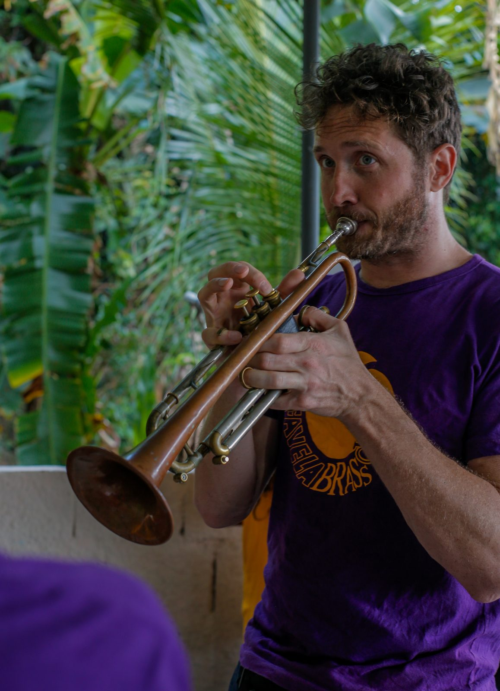

Tom Ashe
Fundador e Diretor Executivo Founder and Executive DirectorTrompetista britânico radicado no Rio de Janeiro desde 2008. Fundou a Favela Brass em 2014 com a visão de levar educação musical de qualidade para as favelas e escolas públicas do Rio. British trumpet player based in Rio de Janeiro since 2008. He founded Favela Brass in 2014 with the vision of bringing quality music education to Rio's favelas and public schools.